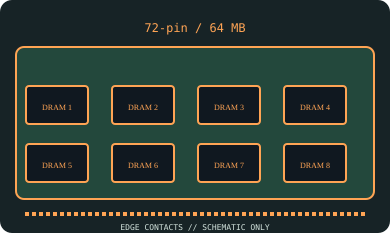

[ MEMORY // IDENTIFIED VINTAGE MODULE ]
Samsung KMM53216000BK
A high-density 64 MB x32 FPM module; physical 72-pin fit does not imply compatibility with ordinary 486 boards. This is a model-specific record, not a generic SIMM-family listing.

Exact module specifications
| Manufacturer / exact part number | Samsung KMM53216000BK |
|---|---|
| Capacity | 64 MB (16M × 32 bits) |
| Generation / contact count | 72-pin SIMM, high-density 72-pin vintage generation |
| Memory mode and parity | Fast Page Mode (FPM) DRAM; 32-bit non-parity data path; no ECC |
| Speed / access time | 60 ns row-access (tRAC) timing variant documented for this module family |
| Operating voltage | 5 V nominal (module-family datasheet specifies a single +5 V supply; ±10% where stated). |
| Chip organization | Eight 16M × 4 DRAMs on the Samsung 16M × 32 module family |
Host compatibility & handling
Very high-density 72-pin module: only use where the chipset, BIOS and board manual explicitly support 16M × 4 DRAM devices and 64 MB per SIMM. Many 486/Pentium-era systems do not decode it. 5 V and non-parity are required.
- 72-pin SIMMs have 32-bit data or 36-bit data-plus-parity organization; 30-pin SIMMs expose 8 or 9 bits. 30-pin and 72-pin modules are not interchangeable.
- Confirm the system’s documented voltage, supported memory density, parity policy, bank-width/population order, and access timing before installation; matching notches do not guarantee support.
- Handle by board edges, protect from ESD, and document the complete module/chip markings and the host used for testing.
Model-specific identification notes
A high-density 64 MB x32 FPM module; physical 72-pin fit does not imply compatibility with ordinary 486 boards. The module organization and exact SKU should be checked against the cited data-sheet/archive records and the physical label; speed suffixes are not interchangeable.
Sources & further reading
- Samsung KMM53216000BK module datasheet archive search (16M × 32 family)Primary model-specific source for the stated part family and organization; use the matching speed-grade datasheet/label for final identification.
- Internet Archive — 72-pin FPM SIMM manual; use board documentation for high-density supportIndependent HTTPS archival source for vintage module generation and context. Compatibility is host-specific and must be checked in the machine's service manual.
Archive references establish the vintage form-factor context; the module data sheet and host service manual govern electrical/timing compatibility.